Como usar a aplicação web (site, painel administrativo e painel do motorista) e o aplicativo
(cidadão e gestor de órgão), com todas as funcionalidades disponíveis.
Para quem: cidadãos, gestores de órgão, atendentes, supervisores, administradores e agentes de campo.
O CIOP é a plataforma da prefeitura para registrar, priorizar, despachar e acompanhar ocorrências públicas
— buracos, alagamentos, iluminação, descarte irregular de lixo e outras demandas — do primeiro registro até o encerramento.
Cada ocorrência recebe um protocolo (ex.: OC-2026-00012), um prazo de atendimento,
localização no mapa, fotos e o histórico completo de tudo que aconteceu com ela.
O sistema tem cinco portas de entrada:
Canal
Quem usa
Para quê
Site público
Qualquer pessoa
Conhecer o serviço, ler os informativos dos órgãos e responder pesquisas por link/QR Code
Painel administrativo (web)
Atendentes, supervisores, gestores de órgão, administradores
Operar a central: ocorrências, despacho, cadastros, relatórios, pesquisas e informativos
Painel do motorista (web)
Agentes de campo/motoristas
Aceitar chamados, atualizar status e compartilhar a localização em tempo real
App do cidadão
Cidadãos (com ou sem cadastro)
Registrar e acompanhar ocorrências, ver os totais da cidade e os informativos, responder pesquisas
App do gestor
Gestores de órgão
Ver as ocorrências do seu órgão, mudar o status e receber avisos de novas ocorrências
2. Quem usa e o que cada um vê
Perfil
O que faz
O que vê
Cidadão com conta
Registra ocorrências (identificadas ou anônimas) e acompanha pela conta
Só as próprias ocorrências; totais da cidade; informativos
Cidadão sem cadastro
Registra ocorrências sempre anônimas
Só as que registrou, pelo protocolo + código de acompanhamento
Gestor de órgão
Analisa e movimenta as ocorrências do órgão; publica informativos
Só as ocorrências e informativos do próprio órgão
Atendente / Supervisor
Registra, faz triagem, despacha e acompanha prazos. Supervisor também reabre casos encerrados e aplica a LGPD
Conforme as permissões do seu perfil
Administrador
Configura o sistema, usuários e permissões
Tudo
Motorista / Agente de campo
Atende na rua
As ocorrências atribuídas a ele
Regra de privacidadeUma ocorrência só aparece para quem a registrou e para
o gestor do órgão responsável (além da equipe da central, conforme permissões). O mapa e os totais públicos
nunca mostram dados de uma ocorrência específica — veja a Parte C.
3. Como uma ocorrência anda (status)
Ao ser registrada, a ocorrência vai automaticamente para o órgão responsável pelo tipo escolhido
(ex.: Alagamento → Defesa Civil), recebe protocolo, prazo e o status Recebida. Os gestores desse órgão são avisados.
Etapa no app
Status
Significado
Aberta
Recebida, Em triagem, Validada, Aguardando despacho, Aguardando aceitação, Recusada, Reaberta
Ainda não começou a ser atendida
Em andamento
Aceita, Em deslocamento, Equipe no local, Em atendimento, Aguardando material
Uma equipe está cuidando do caso
Resolvida
Resolvida, Finalizada
Serviço executado / caso encerrado
Fora da contagem
Cancelada, Duplicada
Encerrada sem atendimento
Encerramento e reaberturaFinalizada, Cancelada e Duplicada são status de encerramento: a
ocorrência só sai deles para Reaberta, e somente um Supervisor ou Administrador pode reabrir.
Parte A — Aplicação web
Site público, painel administrativo e painel do motorista · https://flysop.fly.dev
A1. Site público e informativos
A página inicial apresenta o serviço e traz o bloco Informativos, com os últimos avisos publicados
pelos órgãos (título, órgão, data e texto). Textos longos abrem em “Ler informativo completo”. O bloco só aparece
quando há algum informativo publicado. O botão Acessar (canto superior) leva ao login do painel.
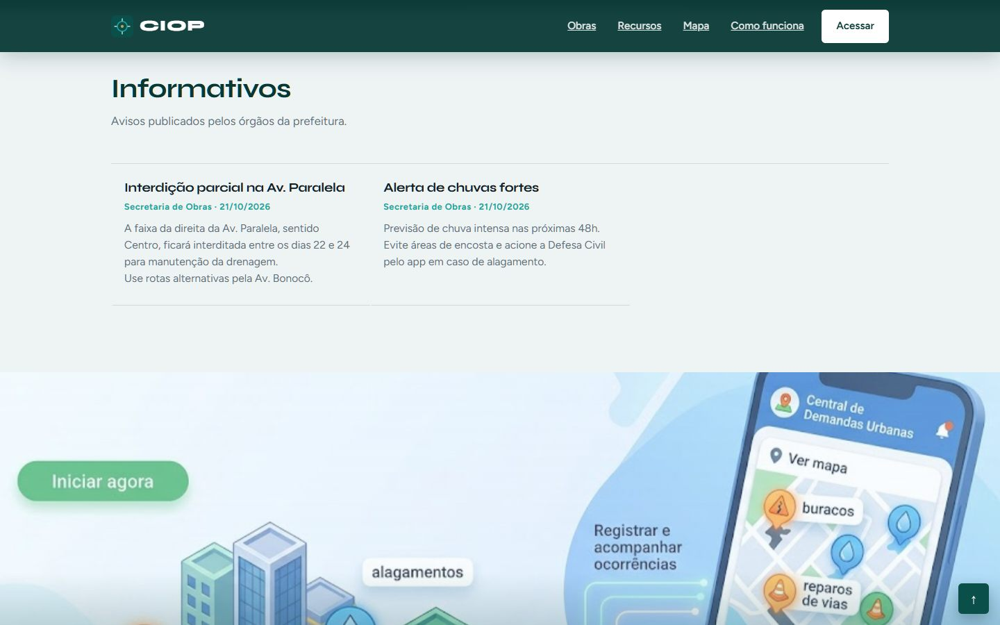
Figura 1 — Informativos na página inicial do site
Pesquisas por link: cada pesquisa ativa tem um endereço público (/p/código) e um QR Code,
que podem ser divulgados em cartazes e redes sociais. Qualquer pessoa responde sem precisar de conta.
A2. Entrar no painel
Acesse https://flysop.fly.dev/login (ou clique em Acessar no site).
Informe o e-mail e a senha cadastrados pelo administrador.
Você cai no Painel de Controle. O menu lateral mostra apenas os módulos que o seu perfil pode usar.
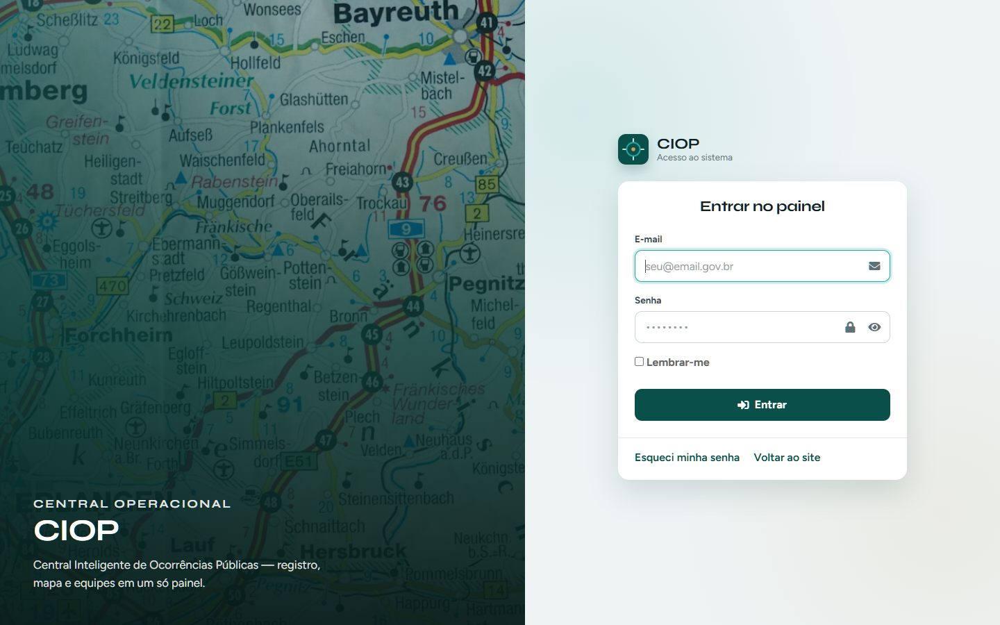
Figura 2 — Tela de login
Não consigo entrar no painelO acesso ao painel exige um perfil com pelo menos uma permissão.
Se aparecer “Sem permissão para acessar o painel administrativo”, peça ao administrador para vincular um perfil ao seu usuário.
Motoristas são levados direto para o Painel do Motorista.
A3. Painel de Controle
É a visão operacional da central, atualizada automaticamente:
Cadastros: quantidade de usuários, órgãos, tipos e ocorrências, com atalho para cada módulo.
Operação: ocorrências abertas, em atendimento, finalizadas hoje, prazo (SLA) estourado e em risco.
Filtros: status, tipo, prioridade, motorista e período — refinam o mapa e a lista.
Ocorrências recentes (atualiza a cada minuto e na hora, quando algo muda) e Mapa das ocorrências,
com marcadores coloridos pela prioridade, agrupamento de pontos, posição dos motoristas e mapa de calor.
Gráficos de ocorrências por dia, por status e por prioridade.
Exportar uso: baixa um arquivo CSV (abre no Excel) com os números de uso do sistema.
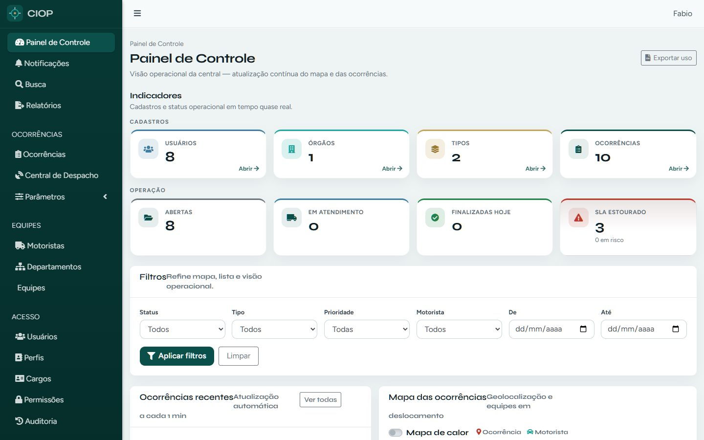
Figura 3 — Painel de Controle
A4. Notificações e Busca
Notificações
Avisos internos sobre ocorrência atribuída a você, mudança de status, prazo em risco, relatório pronto e nova
ocorrência para o seu órgão. Clique para abrir o caso; marque como lidas quando tratar.
Busca
Pesquisa em todo o sistema por protocolo, título, descrição ou endereço — aceita trechos de palavras e variações
(ex.: “alagado” encontra “alagamento”).
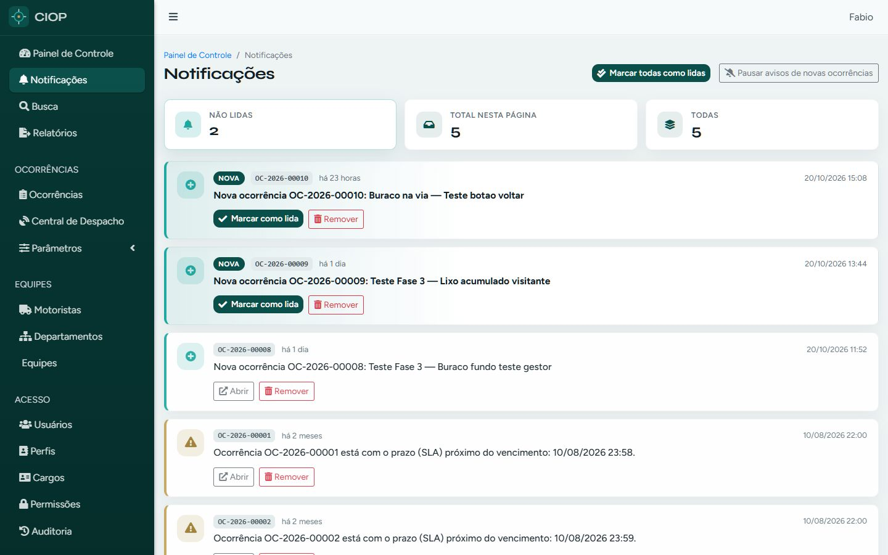
Figura 4 — Notificações
A5. Ocorrências
Lista
Mostra protocolo, título, tipo, status, prioridade e prazo, com busca por protocolo/texto. O gestor de órgão
vê somente as ocorrências do próprio órgão.
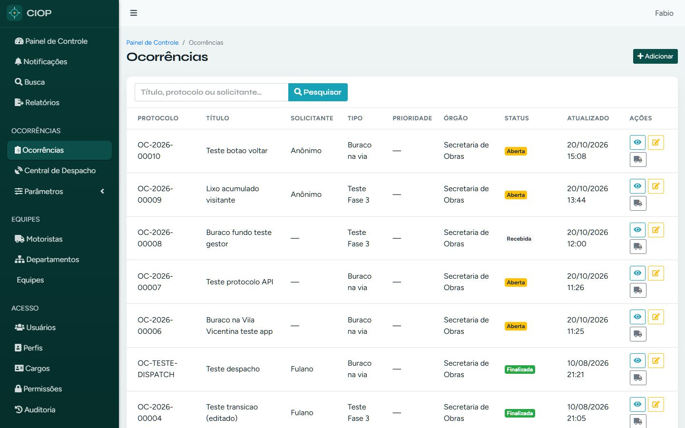
Figura 5 — Lista de ocorrências
Cadastrar ocorrência (atendimento por telefone/balcão)
Em Ocorrências, clique em Adicionar.
Preencha título, tipo (o órgão e o prazo vêm do tipo), prioridade e descrição.
Marque o local no mapa: clique ou arraste o marcador, ou digite o endereço — bairro, cidade, UF e CEP são preenchidos sozinhos.
Informe os dados do solicitante, se houver, e anexe fotos indicando a fase: antes ou depois do atendimento.
Use Sugerir mais próximo para indicar o motorista disponível mais perto, e salve.
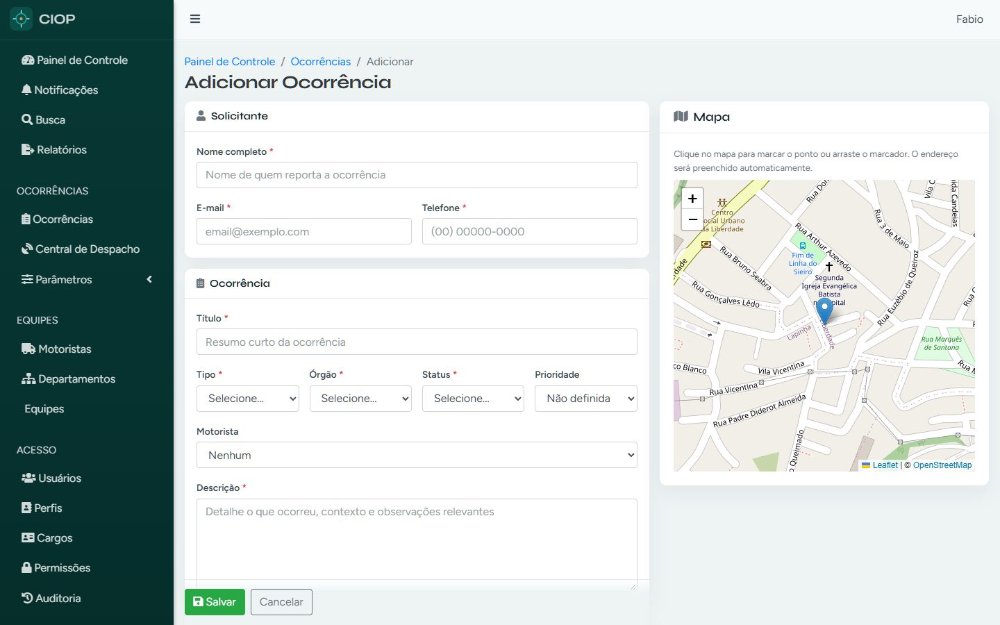
Figura 6 — Cadastro de ocorrência
Detalhe da ocorrência
Dados principais: protocolo, status, tipo, órgão, prioridade, prazo (SLA), motorista, endereço e solicitante
(em ocorrências anônimas o solicitante aparece como “Anônimo”).
Possível duplicata: o sistema avisa quando há outra ocorrência do mesmo tipo a menos de 300 m nas últimas 48 h.
Se não for, clique em Não é duplicata.
Evidências: fotos separadas em antes e depois, com autor e data.
Histórico de status e auditoria: quem mudou o quê e quando.
Baixar ficha (PDF) — documento da ocorrência para impressão ou anexo a processos.
Esquecer dados pessoais (LGPD) — apaga nome, CPF, RG, e-mail e telefone do solicitante, mantendo o histórico
do atendimento (Supervisor/Administrador).
Editar, Excluir e acompanhar a rota do motorista no mapa em tempo real.
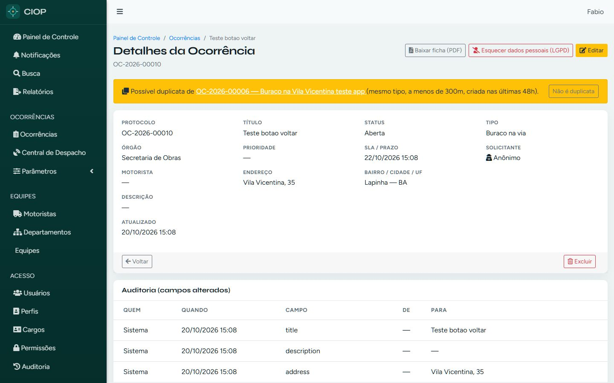
Figura 7 — Detalhe da ocorrência
A6. Central de Despacho
Tela para decidir rápido quem atende cada caso: lista filtrável ao lado do mapa.
Filtros rápidos: Todas, Críticas, Últimas 24h, Em aberto, Sem atendimento e Próximas (ordena pela distância até você).
Ao escolher uma ocorrência, o sistema sugere os motoristas disponíveis mais próximos e da especialidade certa,
desenhando-os no mapa com uma linha até o local.
Clique em Atribuir: a ocorrência vai para “Aguardando aceitação” e o motorista é notificado.
A sugestão nunca atribui sozinha — a decisão é sempre de uma pessoa.
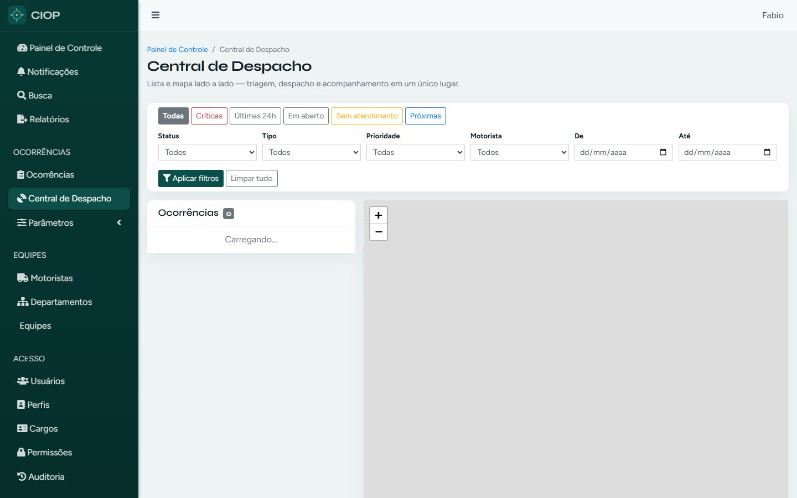
Figura 8 — Central de Despacho
A7. Relatórios
Gere relatórios por período e filtros: Listagem de ocorrências e Tempo médio por etapa
(quanto tempo as ocorrências ficam em cada status). Eles são preparados em segundo plano — você recebe uma notificação quando
o arquivo estiver pronto para baixar.
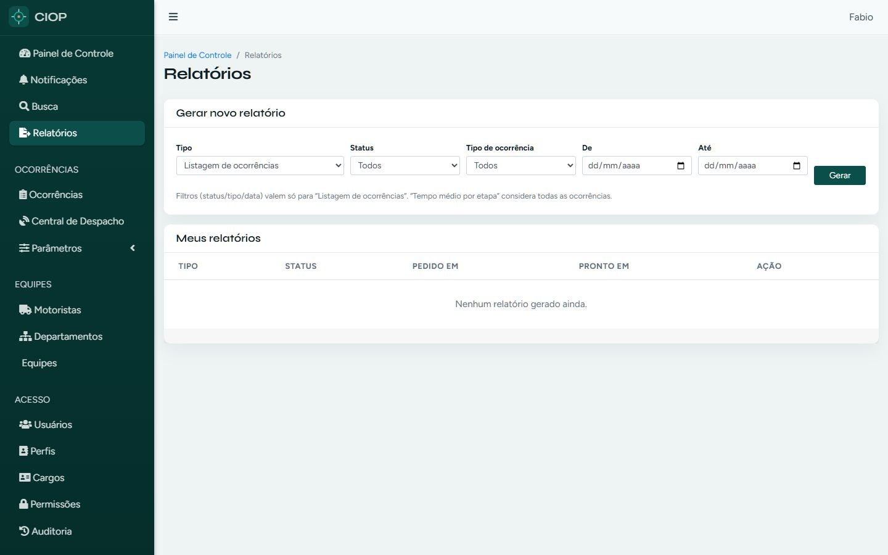
Figura 9 — Relatórios
A8. Parâmetros: status, tipos, prioridades e órgãos
Ficam em Ocorrências → Parâmetros e definem como a operação funciona:
Cadastro
Para que serve
Status
Etapas do fluxo, com ordem e marcação de encerramento. Atenção: renomear um status
tira suas ocorrências da contagem Aberta/Em andamento/Resolvida do app.
Tipos
Categorias (e subtipos) de ocorrência, com o órgão responsável e o prazo em horas.
É o tipo que define para qual órgão a ocorrência do cidadão vai.
Prioridades
Níveis de urgência, com cor e prazo próprios (o prazo da prioridade vale mais que o do tipo).
Órgãos
Secretarias/órgãos que recebem as ocorrências (ex.: Defesa Civil, Obras).
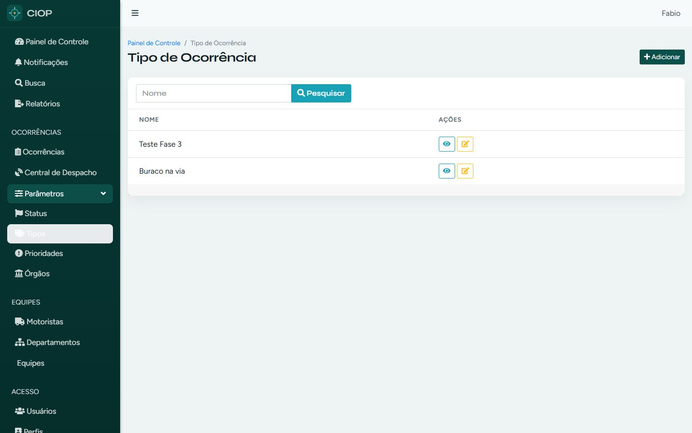
Figura 10 — Tipos de ocorrência
A9. Equipes: motoristas, departamentos e equipes
Motoristas: agentes de campo, com status de disponibilidade (atualizado sozinho conforme a ocorrência anda) e equipe.
Departamentos e Equipes: organizam a força de trabalho. Uma equipe pode ter uma especialidade
(tipo de ocorrência) — o despacho sugere equipes da especialidade certa.
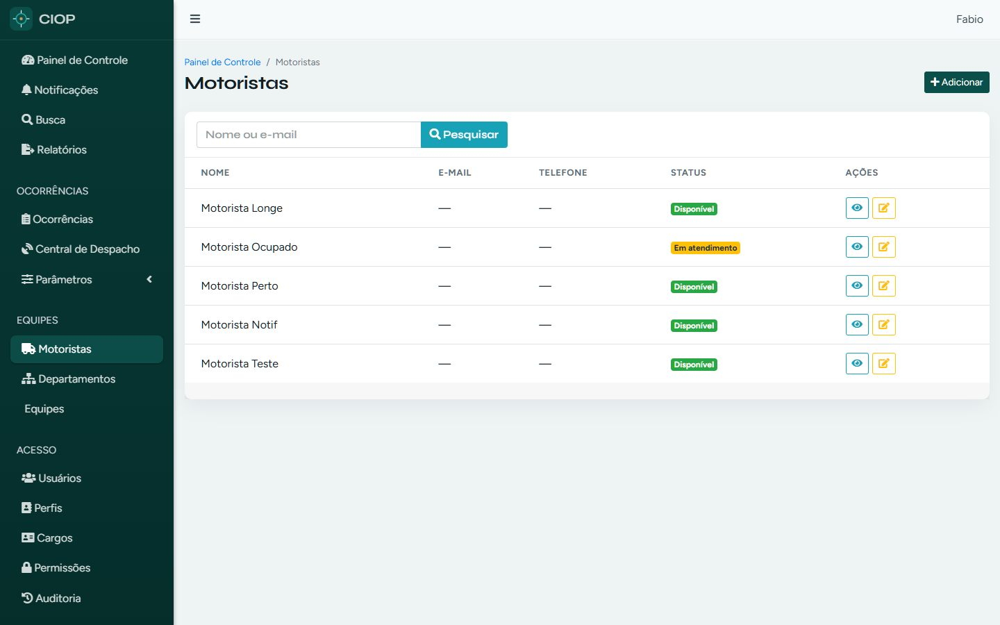
Figura 11 — Motoristas
A10. Acesso: usuários, perfis, cargos, permissões e auditoria
Usuários: quem acessa o painel. Ao vincular um usuário a um órgão, ele vira
gestor daquele órgão: vê só as ocorrências do órgão (no painel e no app do gestor) e pode publicar informativos.
Cargos e Perfis: agrupam permissões. Cargos padrão: Administrador, Supervisor, Atendente.
Permissões: liberam cada módulo do menu (ex.: occurrences, surveys, announcements).
Auditoria: registro de alterações e de acessos a dados pessoais (quem viu e quem editou, separadamente).
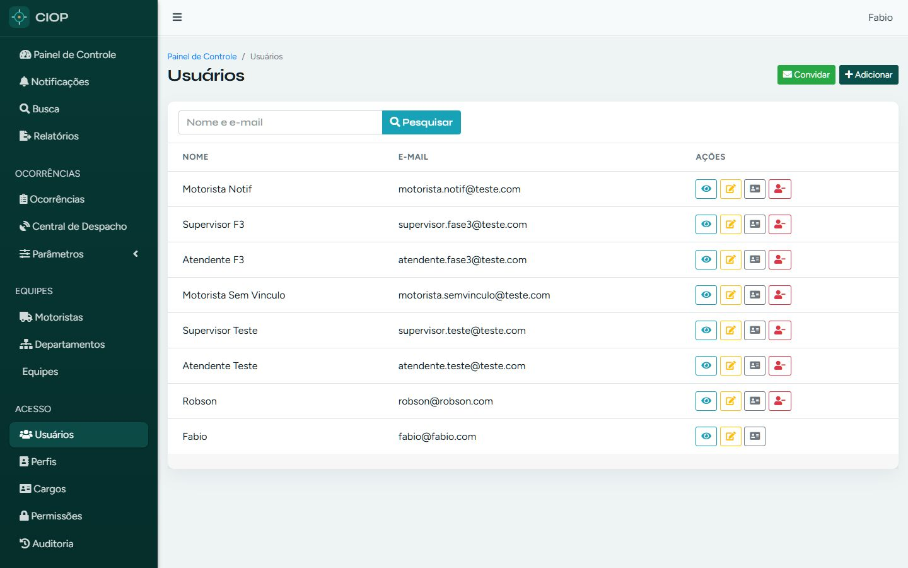
Figura 12 — Usuários
Como criar um gestor de órgãoCadastre o usuário, selecione o órgão dele e vincule um cargo
com acesso ao painel (por exemplo, com a permissão de Ocorrências). O módulo Informativos é liberado automaticamente a todo gestor.
A11. Pesquisas
Em Engajamento → Pesquisas, clique em Adicionar.
Informe título e descrição e monte as perguntas: texto livre, escolha única (uma opção por linha)
ou escala de 1 a 5. Marque as obrigatórias.
Deixe a pesquisa ativa. Ela passa a aparecer no app e ganha link público e QR Code para divulgação.
Acompanhe as respostas no ícone Respostas. Desative quando quiser encerrar.
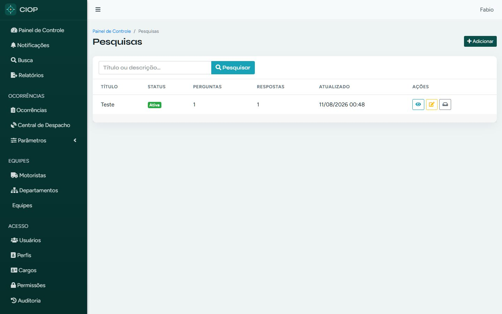
Figura 13 — Pesquisas
A12. Informativos
Avisos do órgão para a população — interdições, alertas de chuva, mutirões. Aparecem na página inicial do site
e na página inicial do app.
Em Engajamento → Informativos, clique em Adicionar.
O gestor de órgão publica sempre para o próprio órgão (o campo não aparece). O administrador escolhe o órgão.
Escreva o título (até 120 caracteres) e o texto (até 5.000 caracteres; as quebras de linha são mantidas).
Deixe Publicado marcado para exibir imediatamente, ou desmarque para salvar como rascunho.
Edite ou exclua pela lista. Despublicar tira o informativo do site e do app na hora.
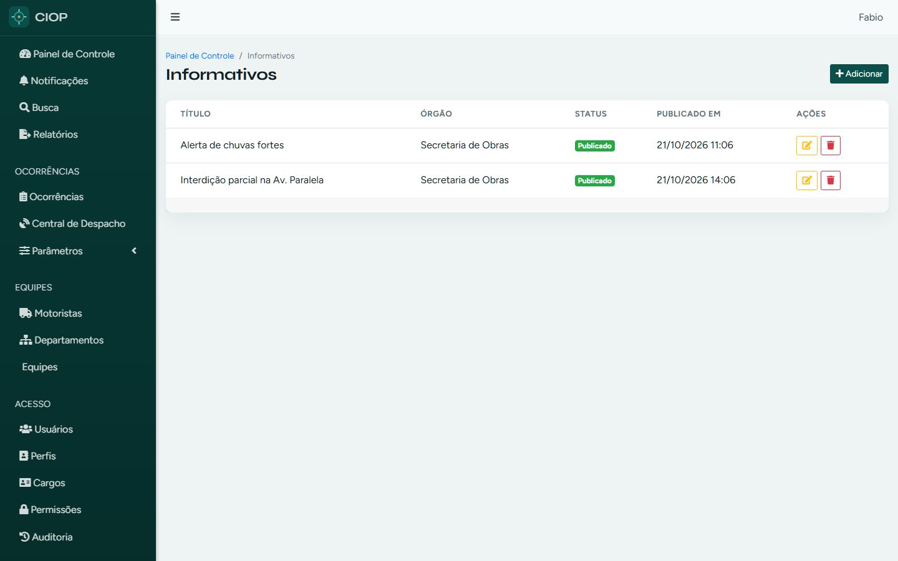
Figura 14 — Lista de informativos
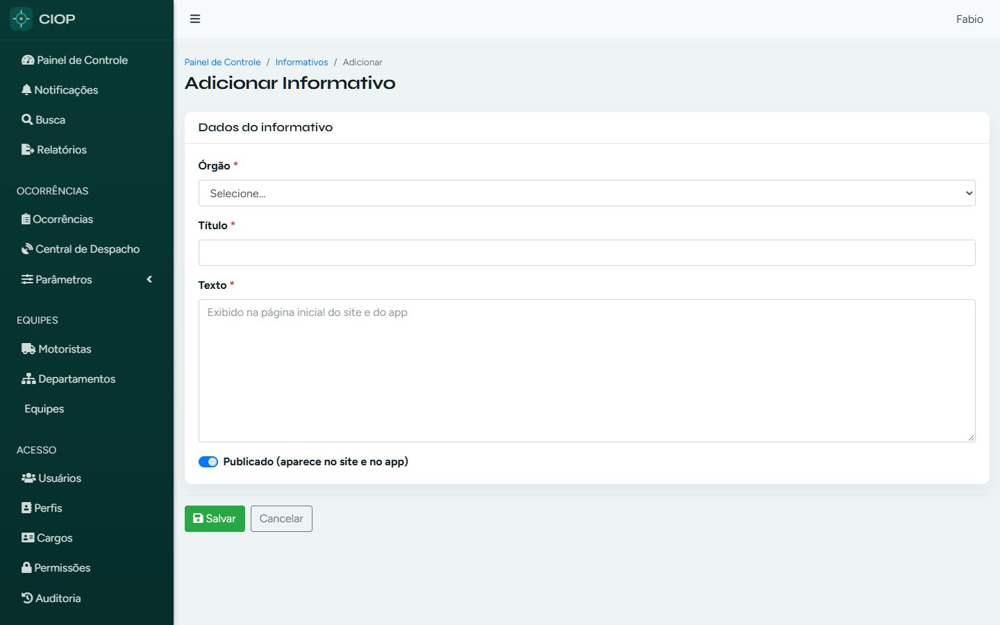
Figura 15 — Cadastro de informativo (visão do administrador)
A13. Sistema: organização e empresas
Organização: nome, CNPJ, e-mail, endereço e logotipo da prefeitura exibidos no sistema. Empresas: cadastro da
organização que usa o sistema (uso do administrador).
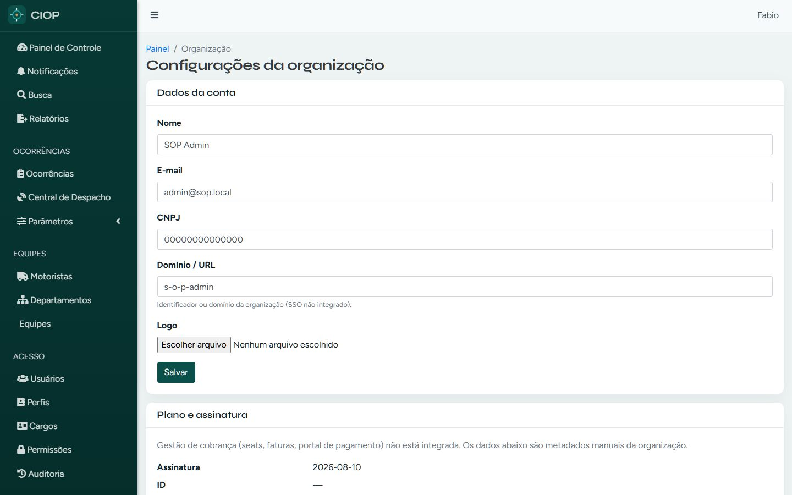
Figura 16 — Organização
A14. Painel do motorista
Área web para o agente de campo, pensada para uso no celular pelo navegador:
Entre com seu usuário. Você vê o painel com as ocorrências atribuídas a você.
Ao receber um chamado, clique em Aceitar ou Recusar — a central é avisada na hora.
Com a página aberta, sua localização é enviada em tempo real (autorize a localização no navegador);
a central acompanha o trajeto no mapa.
Use Atualizar status conforme avança (por exemplo: Em deslocamento → Equipe no local → Em atendimento → Resolvida). Cada mudança entra no histórico e atualiza sua disponibilidade.
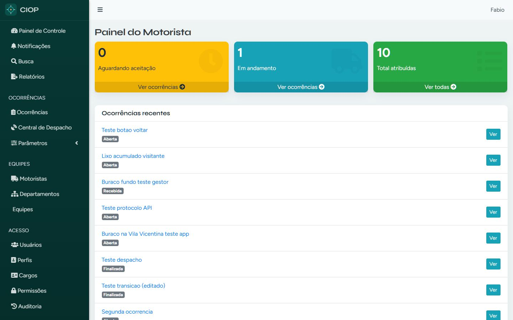
Figura 17 — Painel do motorista
Parte B — Aplicativo
App do cidadão e app do gestor de órgão · Android
B1. Instalação e primeiro acesso
Instale o arquivo APK fornecido pela prefeitura (o Android pode pedir para permitir a instalação de fontes externas).
Ao abrir, passe pelas telas de boas-vindas (ou toque em Pular).
Escolha como usar:
Criar conta — nome, e-mail, telefone (opcional) e senha com pelo menos 8 caracteres, uma letra e um número;
aceite os Termos de Uso e a Política de Privacidade.
Conectar-se — se já tem conta, entre com o e-mail e a senha do cadastro. Após 5 tentativas erradas, aguarde um minuto para tentar de novo.
Registrar sem cadastro (anônimo) — usa o app sem conta. O app lembra essa escolha nas próximas vezes.
Acesso do gestor — para gestores de órgão, com o usuário e a senha do painel.
Permita o acesso à localização e à câmera quando o app pedir.
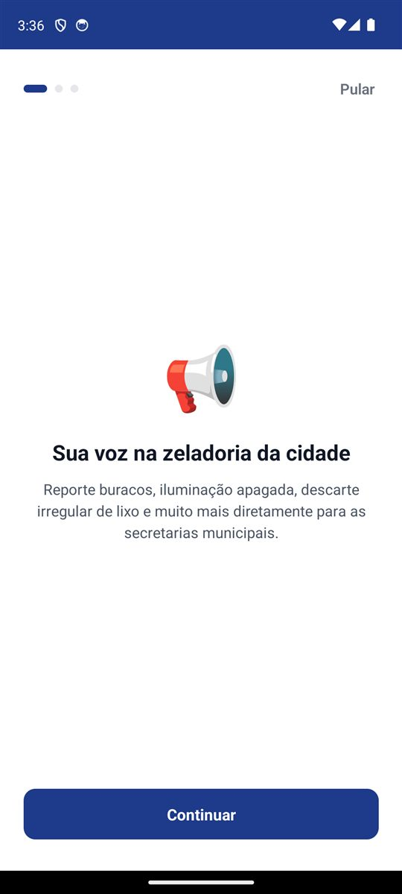
Figura 18 — Boas-vindas
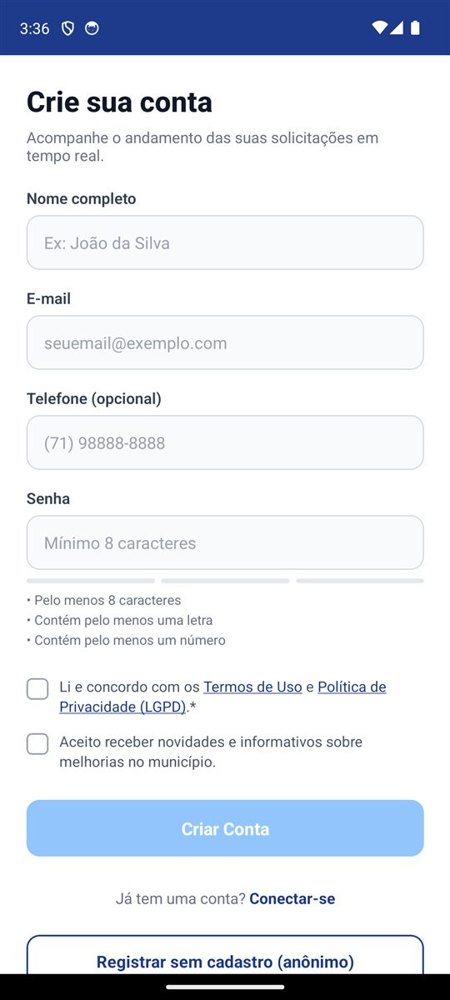
Figura 19 — Criar conta
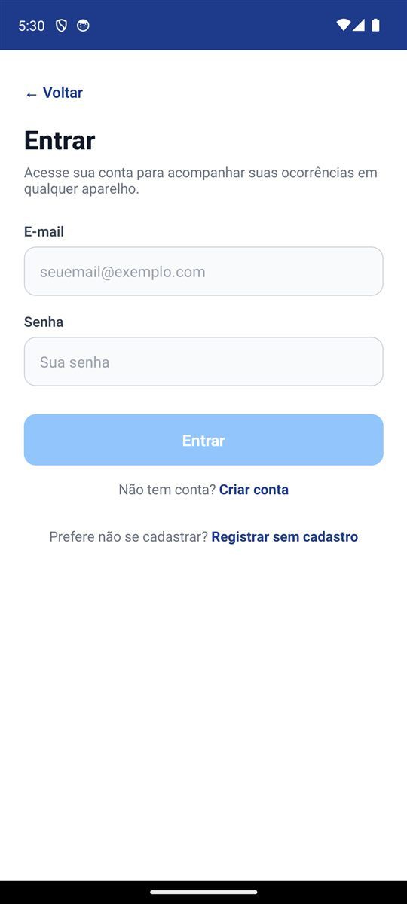
Figura 20 — Entrar
Com conta ou sem cadastro?Com conta você acompanha suas ocorrências de qualquer aparelho e pode
registrar de forma identificada ou anônima. Sem cadastro, toda ocorrência é anônima e o acompanhamento depende do protocolo e do
código de acompanhamento.
B2. Início
É a primeira tela depois de entrar. Mostra:
Os totais de ocorrências da cidade: AbertasEm andamentoResolvidas.
O filtro por órgão (Todos os órgãos ou um órgão específico), que vale para os totais e os informativos.
O botão Ver mapa.
Os Informativos publicados pelos órgãos — toque em Ler mais nos textos longos.
Puxe a tela para baixo para atualizar.
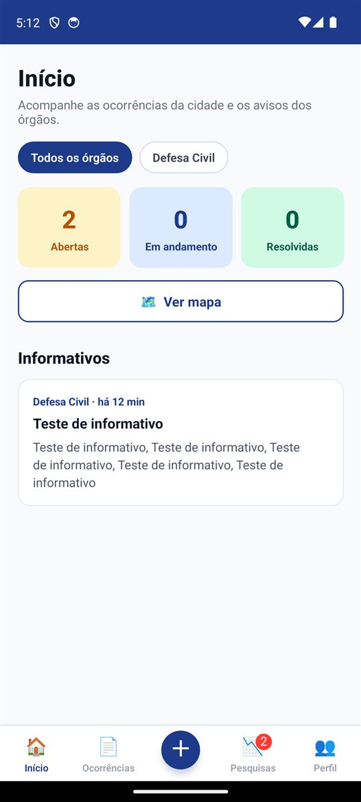
Figura 21 — Início
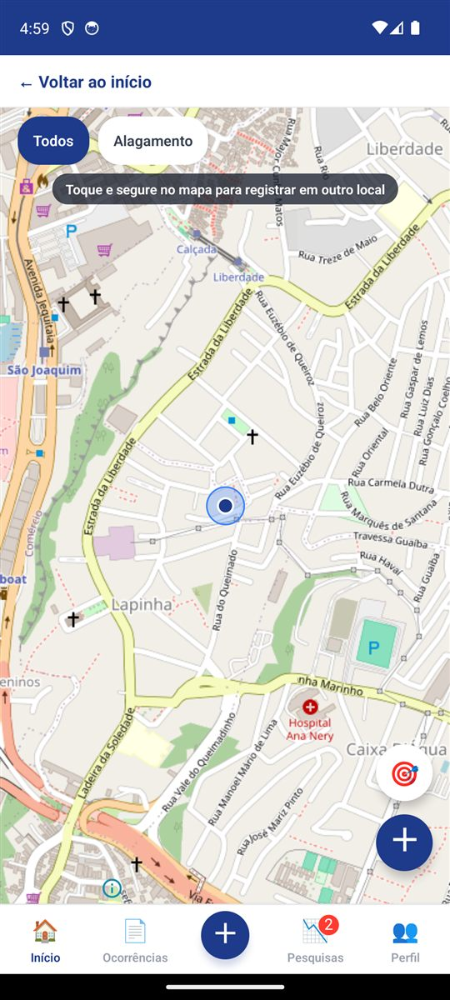
Figura 22 — Mapa
B3. Mapa
Abra pelo botão Ver mapa no Início; volte com ← Voltar ao início.
Mostra sua posição e as suas ocorrências (quem usa sem cadastro não vê ocorrências no mapa).
Filtre por tipo nos botões do topo e centralize em você com o botão de alvo.
Toque e segure em qualquer ponto para registrar uma ocorrência naquele local; o botão + registra no seu local atual.
Sem internet, o mapa avisa que você está offline.
B4. Registrar uma ocorrência
Toque no + no centro do menu.
Local do problema: o app usa sua localização (Minha localização) e mostra o endereço; para outro ponto,
toque em Escolher no mapa.
Escolha o tipo de ocorrência — ele define o órgão que vai atender.
Escreva um título curto e, se quiser, uma descrição com pontos de referência.
Toque em Tirar Foto da Ocorrência, fotografe e confirme em Usar Foto (opcional, mas ajuda muito).
Com conta, ligue Enviar de forma anônima se não quiser que o órgão saiba quem registrou (sem cadastro, é sempre anônimo).
Confirme o termo de veracidade e de tratamento de dados (LGPD) e toque em Registrar Chamado.
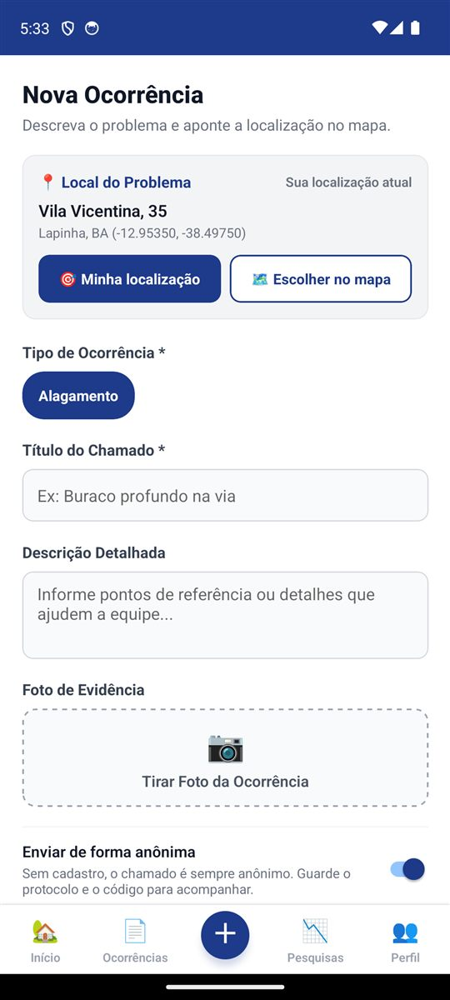
Figura 23 — Nova ocorrência
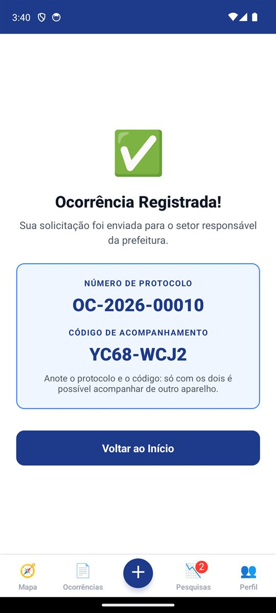
Figura 24 — Protocolo e código
Anote o protocolo e o código de acompanhamentoSem cadastro, a tela de sucesso mostra o
protocolo e um código de acompanhamento (ex.: YC68-WCJ2). O app guarda os dois
neste aparelho, mas para acompanhar de outro celular — ou se o app for reinstalado — você precisa deles. O código é mostrado só uma vez.
B5. Acompanhar ocorrências
Com conta — Minhas Ocorrências
A aba Ocorrências lista tudo o que você registrou, com status e foto. Toque para ver o detalhe:
situação atual, local, descrição e fotos.
Sem cadastro — Acompanhar ocorrência
As ocorrências registradas neste aparelho aparecem sozinhas. De outro aparelho, informe protocolo e
código e toque em Consultar; a ocorrência passa a ficar salva também nele.
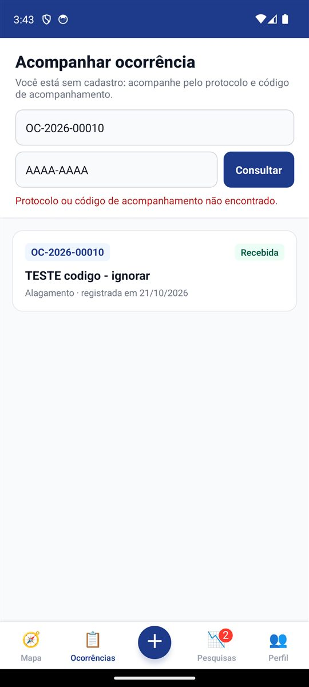
Figura 25 — Acompanhar sem cadastro
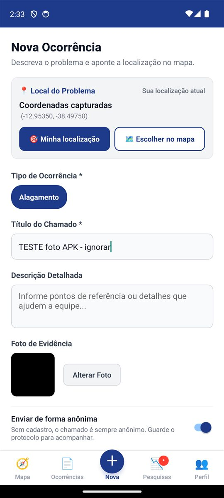
Figura 26 — Ocorrência com foto antes do envio
B6. Pesquisas
A aba Pesquisas lista as pesquisas ativas da prefeitura. O número vermelho no ícone mostra quantas você ainda não
respondeu neste aparelho. Toque em Responder Pesquisa, preencha (as obrigatórias têm *) e toque em
Enviar Respostas, ou volte sem responder em Voltar às Pesquisas. As respostas não ficam ligadas à sua conta.
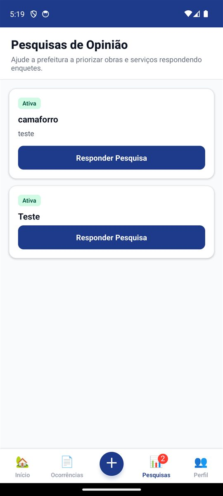
Figura 27 — Pesquisas
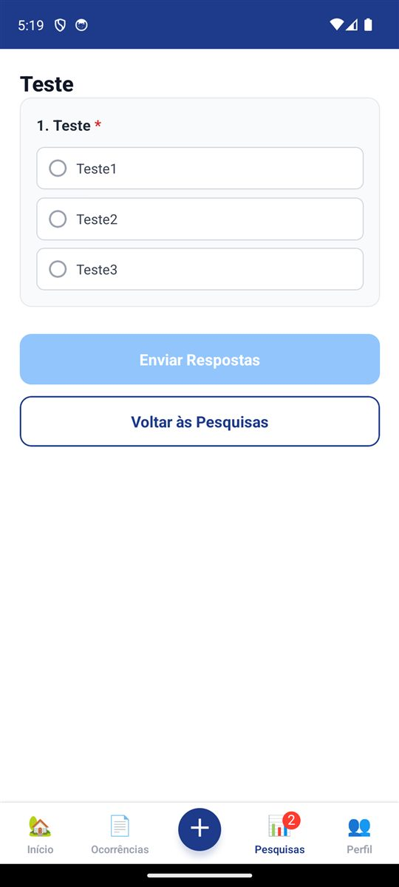
Figura 28 — Respondendo
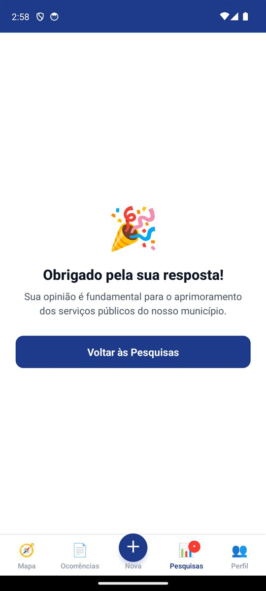
Figura 29 — Enviada
B7. Perfil
Com conta, a aba Perfil permite alterar nome e e-mail (Salvar Alterações)
e Sair. Sem cadastro, mostra a opção Criar conta ou entrar.
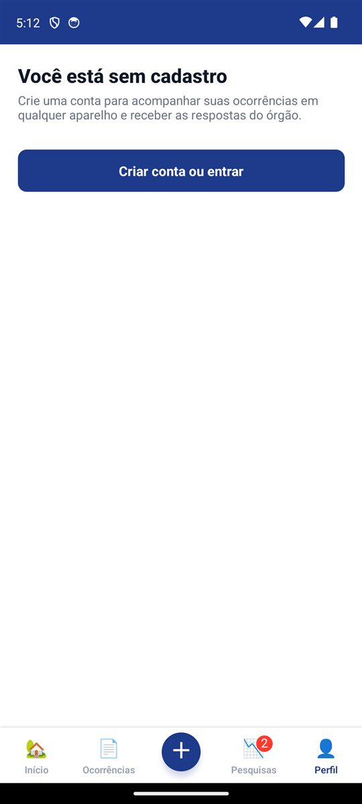
Figura 30 — Perfil sem cadastroFigura 31 — Acesso do gestor
B8. App do gestor de órgão
Na tela de entrada, toque em É gestor de um órgão? Acesso do gestor e use o mesmo e-mail e senha do painel web.
O usuário precisa estar vinculado a um órgão.
Ocorrências do órgão: lista das ocorrências do seu órgão, com filtro por status. Toque para ver o detalhe
(local, descrição, solicitante e histórico de status) e, em Salvar status, mova a ocorrência para a próxima etapa.
Em ocorrências anônimas, o solicitante aparece como “Cidadão anônimo”.
Notificações: aviso de cada nova ocorrência do órgão; o número no ícone mostra as não lidas.
Minha conta: ligue ou desligue Novas ocorrências do órgão — “Receber aviso quando um cidadão registrar
uma ocorrência” — e saia do app.
Parte C — Privacidade e suporte
C1. Quem vê cada informação
Informação
Quem vê
Uma ocorrência (dados, fotos, status)
Quem registrou (pela conta ou pelo protocolo + código), o gestor do órgão responsável e a equipe da central com permissão
Identidade de quem registrou como anônimo
Ninguém do órgão — nem o gestor nem o painel. Com conta, a ocorrência continua na sua lista para você acompanhar
Fotos das ocorrências
Guardadas em armazenamento privado; só abrem por um link temporário (válido por 1 hora) gerado para quem pode ver a ocorrência
Totais Abertas / Em andamento / Resolvidas
Público — são apenas números, sem dados de nenhuma ocorrência
Informativos publicados
Público (site e app). Rascunhos só no painel
Respostas de pesquisa
Equipe com acesso a Pesquisas — as respostas não identificam o cidadão
Dados pessoais do solicitante
Equipe autorizada; cada acesso fica registrado. Podem ser apagados (LGPD) por Supervisor/Administrador; ocorrências encerradas antigas podem ser anonimizadas em lote pela equipe técnica
C2. Dúvidas frequentes
Perdi o código de acompanhamento. E agora?
Se ainda estiver no mesmo aparelho, a ocorrência continua na aba Ocorrências. Sem o aparelho e sem o código, não é possível
consultá-la — por segurança, o protocolo sozinho não abre a ocorrência. Crie uma conta para não depender do código nas próximas.
Não consigo entrar no app com minha conta.
Confira o e-mail e a senha usados no cadastro. Após 5 tentativas erradas, o app bloqueia novas tentativas por um minuto.
Nesta versão não há recuperação de senha pelo app — procure o atendimento da prefeitura.
Apareceu “Não foi possível carregar”.
É falta de conexão ou o servidor demorou a responder. Toque em Tentar novamente (ou puxe a tela para baixo);
o formulário de ocorrência também tenta de novo sozinho quando você volta para ele.
Registrei sem cadastro e a ocorrência não aparece no mapa.
É esperado: o mapa mostra apenas as ocorrências da sua conta. Acompanhe pela aba Ocorrências.
Publiquei um informativo e ele não aparece no app.
Confira se está marcado como Publicado e, no app, puxe a tela Início para baixo para atualizar. Se um órgão estiver
selecionado no filtro, só aparecem os informativos dele.
O gestor não vê o menu Informativos ou não entra no painel.
O usuário precisa estar vinculado a um órgão e ter um cargo com acesso ao painel. Peça ao administrador.
Uma ocorrência sumiu dos totais do app.
Ocorrências canceladas ou marcadas como duplicadas não entram na contagem. Se um status tiver sido renomeado no painel, as
ocorrências nele também saem da contagem — fale com o administrador.
O número de pesquisas pendentes não muda.
Ele conta as pesquisas ativas que você ainda não respondeu neste aparelho e é atualizado ao trocar de aba.
C3. Glossário
Termo
Significado
Protocolo
Número único da ocorrência (ex.: OC-2026-00012)
Código de acompanhamento
Senha de 8 caracteres entregue a quem registra sem cadastro; junto com o protocolo, dá acesso à ocorrência
Órgão
Secretaria ou setor responsável pelo tipo de ocorrência
Gestor de órgão
Usuário vinculado a um órgão; analisa as ocorrências e publica os informativos dele
SLA / Prazo
Tempo máximo esperado para resolver, definido pela prioridade ou pelo tipo
Despacho
Atribuição da ocorrência a um motorista/equipe
Evidência
Foto do antes ou do depois do atendimento
Informativo
Aviso público de um órgão, exibido no site e no app
LGPD
Lei Geral de Proteção de Dados — regras de uso e exclusão de dados pessoais